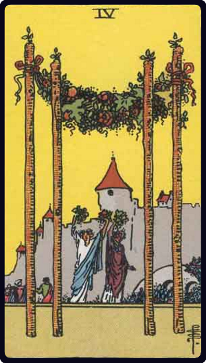
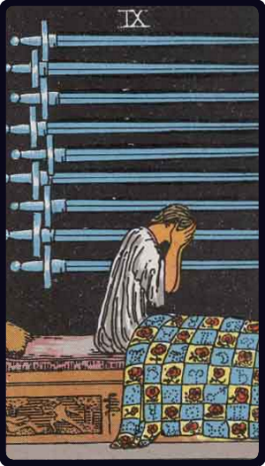

① 連絡してこない理由の占い結果
- 彼の気持ち① 女帝（正位置）
- 彼の気持ち② ペンタクルの2（正位置）
- 彼の気持ち③ ワンドの4（正位置）
- バックカード ソードの9（正位置）
② 彼の今の気持ち｜むしろ好意と安心感は残っている
女帝とワンドの4の組み合わせは、とても穏やかで前向きな印象です。
あなたに対して「居心地がよかった」「大切な存在だった」という気持ちは、今もはっきり残っていると考えられます。
さらに女帝は、単なる好意以上に"包み込むような愛情"を示すカードです。
完全に気持ちが冷めてしまった状態ではなく、むしろ良い感情の記憶が強く残っている状態です。
ただしペンタクルの2が入っていることで、彼の気持ちは安定しきっていません。
「どうするべきか」「連絡するべきかしないべきか」といった迷いの中にいる様子が見えます。
③ それぞれのカードの意味




④ なぜ"諦めていないのに連絡しない"のか
今回のポイントはバックカードのソードの9です。
ソードの9は、不安や後悔、考えすぎによるストレスを表します。
彼の中には、「連絡したらどうなるのか」「うまくいかなかったらどうしよう」という強い不安がある可能性があります。
気持ちはあるものの、現実的な状況やタイミング、自分の立場などを考えてバランスを取ろうとしている状態です。
そのため、すぐに行動に移せない流れになっています。
全体をまとめると、
女帝＋ワンドの4＝好意と安心感はしっかり残っている
ペンタクルの2＝迷いと揺れ
ソードの9＝不安とネガティブな思考
この組み合わせから見えるのは、
「諦めたわけではない。でも不安が強くて動けない」
という心理です。
まとめ
今回の結果から見ると、彼はあなたのことを諦めたわけではありません。
むしろ好意や安心感はしっかり残っています。
ただし、迷いや不安が強く、行動に移す勇気が出ない状態です。
そのため「気持ちはあるのに連絡してこない」という状況が起きていると考えられます。
→ 諦めではなく、不安による"停滞"。